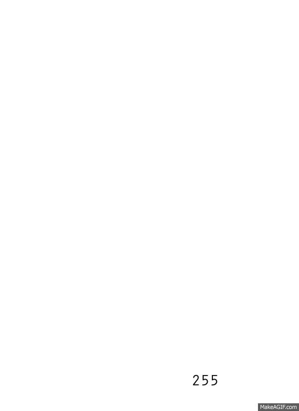
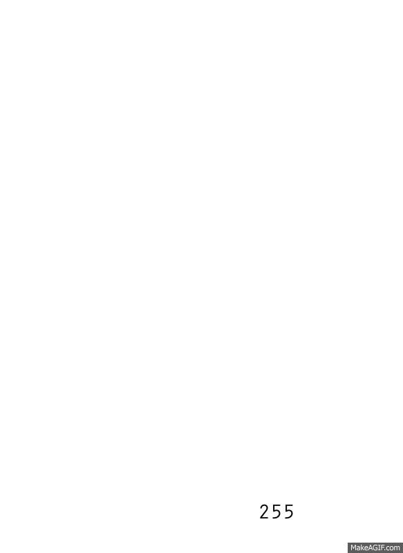

After reading the page about the NRRD format the assingment provided and examining the dataset I wrote the following NrrdWrangler class.
class NrrdWrangler {
int rowCount;
int colCount;
float[][] data;
int header;
NrrdWrangler(String filename, int rowCount, int colCount, int header) {
String[] rows = loadStrings(filename);
this.rowCount = rowCount;
this.colCount = colCount;
this.header = header;
data = new float[rowCount][colCount];
//trim beforehand
for (int i = 0; i < rowCount; i++){
for (int j = 0; j < colCount; j++){
//data[i][j] = parseFloat(rows[j + (i)*colCount + header]);
data[i][j] = Float.parseFloat(rows[j + i*colCount + header]);
//print(data[i][j] + " ");
}
//print("\n");
}
}
float[][] getData(){
return data;
}
float getMax() {
float m = -Float.MAX_VALUE;
for (int i = 0; i < rowCount; i++) {
for (int j = 0; j < colCount; j++){
if (data[i][j] > m) {
m = data[i][j];
//println(i);
}
}
}
return m;
}
float getMin() {
float m = Float.MAX_VALUE;
for (int i = 0; i < rowCount; i++) {
for (int j = 0; j < colCount; j++){
if (data[i][j] < m) {
m = data[i][j];
//println(i);
}
}
}
return m;
}
}
This class takes the .nrrd file skips the header and parses the data into a 2 dimensional array that is the width and height that is specified in the .nrrd file. I wrote into it a getData() method to retreive the data array and getMax() and getMin() methods that are used at various places in my processing code to help me map the data to a [0, 255] range for easy rendering. After writing the NrrdWrangler.pde file the first thing that I did was take the data and use it to create the image. I created a grid and used the rect() command to fill the grid according the values in the table.
 
This data set was hard to understand until I asked my wife, who is from Oregon, why Mt. Hood was such a strange mountain. She informed me that it is a volcano. That made the dataset a little more understandable. With this knowledge, I chose the color map pictured in figure 18. It gives high contrast to the deep lows in the middle of Mt. Hood while still keeping the surrounding area in context. Pictured below is the Marching Squares algorithm implemented on the Mt. Hood data set.
Because the Mt. Hood data set had such a wide range of values it was quite different from the brain dataset, where the values were really just between 100 and 255. This is why the color map needed such tweaking. The isocontours were also quite different as you can see below. The iso contours seem to all converge at the ridge of the volcanic bowl as the isovalues reach 0 (figure 20), ascend a peak down in the volcanic bowl as the isovalue dips below -128 to 0 (figure 21 and figure 22), and climb the mountain as values rise from 0 to 127 (figures 23 and figure 24).
I have to say on both sets the isocontours were much more effective than the color map. I have already addressed the brain data set but with the Mt. Hood data set the isocontours help to make sense of the volcanic bowl (which otherwise does not really make sense to the naked eye).